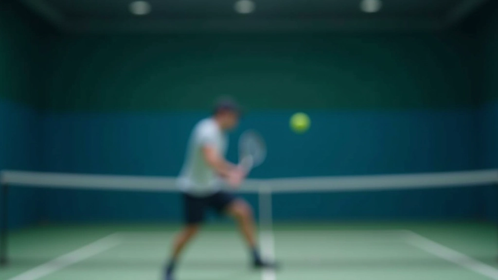

برنامج تدريبي
برنامج أساسيات الضربة الطائرة
برنامج تدريبي منظم يغطي تقنيات الضربة الطائرة من المستوى المبتدئ إلى المتوسط. يركز على وضعية القدمين، تقنية الضربة الأمامية والخلفية، والتوقيت الصحيح. البرنامج يتضمن 12 جلسة عملية أسبوعية مع تمارين تطبيقية مكثفة.
اطلع على التفاصيل